Introduction — Science des données
Les données sont omniprésentes : radiographies médicales, cours boursiers, images satellites, profils clients… Mais une donnée brute ne vaut rien sans la capacité à en extraire du sens. C'est précisément l'objet de la science des données.
Un concept visant à unifier les domaines scientifiques permettant d'extraire de l'information d'un ensemble de données.
Notions liées : statistique, algorithmique, mathématique, informatique, bases de données.
- Comprendre — décrire et résumer les données (ex. : quels sont les profils des patients ?)
- Expliquer — identifier les facteurs qui influencent un résultat (ex. : pourquoi certains patients décèdent-ils ?)
- Prévoir — prédire l'issue pour de nouvelles observations (ex. : ce patient survivra-t-il ?)
- Visualiser — représenter graphiquement des structures cachées (ex. : profils immunitaires)
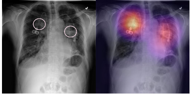
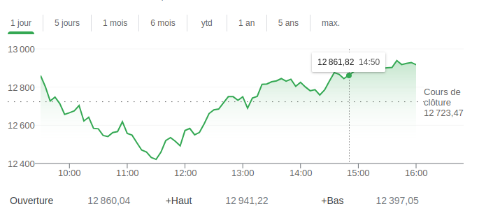
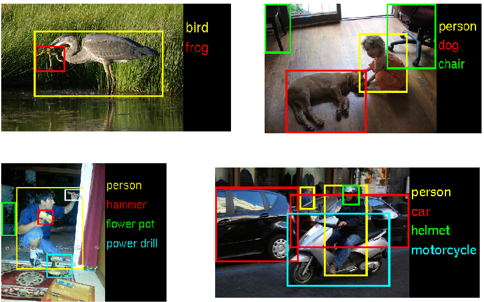
- Tableau structuré
- Texte / langage naturel
- Image, vidéo, audio
- Séries temporelles
Terminologie de base
Avant d'aller plus loin, quelques termes fondamentaux partagés par toutes les méthodes d'analyse de données :
| Terme | Définition |
|---|---|
| Population | Groupe d'individus soumis à une étude |
| Individu | Élément issu de la population (observation) |
| Échantillon | Partie d'une population |
| Variable | Caractère observé sur chaque individu |
Typologie des variables
La nature d'une variable détermine les opérations statistiques applicables et le type de visualisation approprié.
Valeurs non numériques — la moyenne n'a pas de sens.
- Nominale (catégorielle) : pas d'ordre entre les modalités
- Ordinale : existence d'un ordre total
Valeurs numériques — la moyenne a un sens.
- Continue : à valeurs dans un intervalle réel
- Discrète : sinon (valeurs isolées)
Cliquez sur un type pour voir la représentation graphique adaptée.
Sélectionnez une combinaison de types pour voir les représentations graphiques adaptées et leur usage.
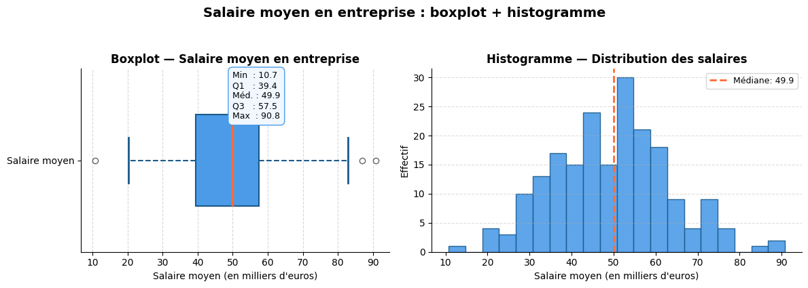
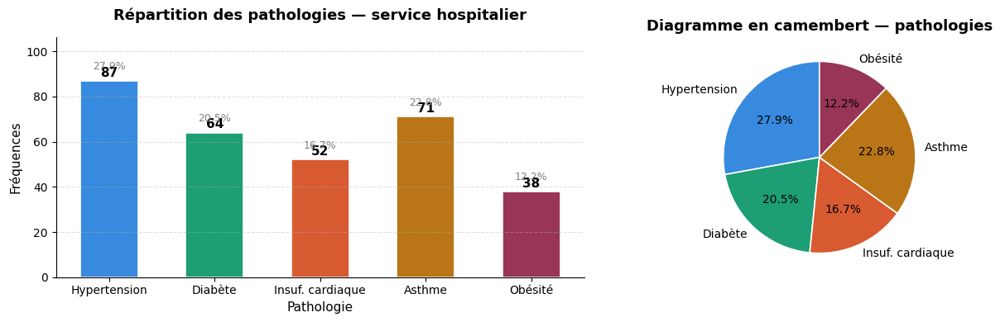
L'analyse des relations entre variables est au cœur de toute démarche prédictive. Deux variables quantitatives peuvent être liées par une corrélation (nuage de points) ; une variable qualitative et une quantitative se comparent par des boîtes à moustaches ou des distributions par groupe.
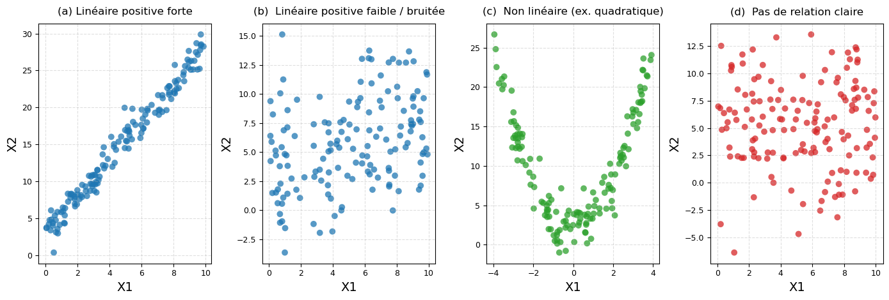
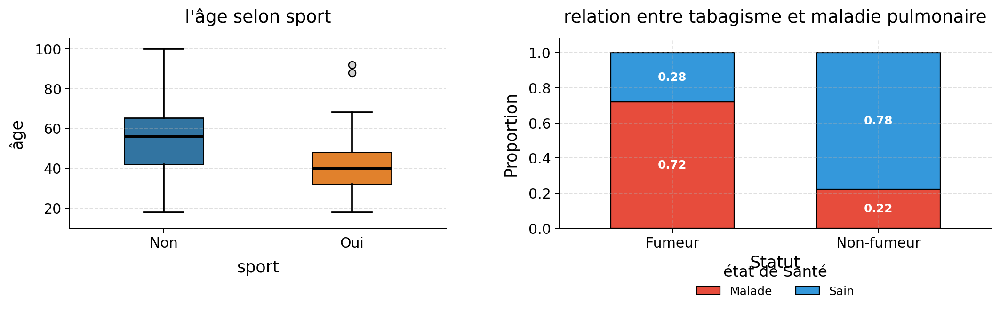
Types de problèmes
La première question à se poser face à un jeu de données est : cherche-t-on à prédire une variable cible, ou à explorer librement la structure des données ? La réponse oriente le choix de la famille de méthodes.
On cherche à prédire ou expliquer une variable cible.
- Régression — variable cible quantitative
- Classification — variable cible qualitative
- Méthodes paramétriques ou non paramétriques
Pas de variable cible — on cherche une structure latente.
- Analyse factorielle (ACP, AFC, ACM)
- Clustering (k-means, CAH…)
- Règles d'association
Les méthodes non supervisées en détail
En l'absence de variable cible, on cherche une structure latente dans les données. Trois grandes familles coexistent :
Approches géométriques : projeter les données en dimension 2 pour en faire une représentation synthétique.
- ACP : données quantitatives
- AFC : deux variables qualitatives
- ACM : plusieurs variables qualitatives
Regrouper les individus en classes homogènes (k défini à l'avance).
- k-means, nuées dynamiques
- Classification hiérarchique ascendante (CAH)
- Modèles de mélange (EM)
Extraire des co-occurrences significatives entre descripteurs.
- Probabilités d'achats simultanés
- Difficulté : explosion combinatoire
- Ex. : achat d'un polar → recommandation ciblée
Résumer les données sous une forme intelligible.
Ex : moyenne d'âge des patients présentant un cancer du sein.
Trouver les ensembles de descripteurs les plus corrélés.
Ex : les acheteurs de poivre achètent aussi du sel.
Apprentissage par renforcement
Troisième grand paradigme, distinct du supervisé et du non supervisé : un agent apprend une politique de décision optimale en interagissant avec un environnement, sans jeu de données étiqueté. Il reçoit un signal de récompense à chaque action et cherche à maximiser la récompense cumulée à long terme.
- Agent — entité qui prend des décisions
- Environnement — système avec lequel l'agent interagit
- État s — description de la situation courante
- Action a — choix effectué par l'agent
- Récompense r — signal de feedback (scalaire)
- Politique π — règle de décision à apprendre
γ ∈ [0,1] est le facteur d'actualisation (discount factor)
- Jeux : AlphaGo (Go), AlphaZero (échecs), agents Atari
- Robotique : locomotion, manipulation d'objets
- Finance : trading algorithmique, gestion de portefeuille
- Recommandation : optimisation de l'engagement utilisateur
- LLMs : RLHF — ajustement fin des assistants IA (ChatGPT, Claude)
Analyse prédictive
Comment décider d'accorder ou non un prêt ? Comment détecter une tumeur sur une radiographie ? Ces problèmes ont en commun de nécessiter une règle de prédiction apprise à partir de données historiques, plutôt que construite analytiquement. On parle d'apprentissage supervisé : on dispose d'observations pour lesquelles les variables explicatives et la variable à prédire sont connues.
La variable expliquée est nominale — chaque observation appartient à une classe.
Ex : le prêt sera remboursé ou non ; détection d'objet dans une image.
La variable expliquée est quantitative (∈ ℝ).
Ex : densité de trafic, volume de ventes, cours d'un actif.
Modèle linéaire — Principe et notations
Le modèle linéaire est la brique de base de la modélisation prédictive. L'idée est simple : prédire en calculant une somme pondérée des variables d'entrée, augmentée d'un terme constant. Trouver le bon modèle revient à trouver les bons poids θ.
- ŷ : valeur prédite
- θ₀ : terme constant (biais / intercept)
- θⱼ : coefficient de pondération (poids)
- xⱼ : valeur de la j-ème variable d'entrée
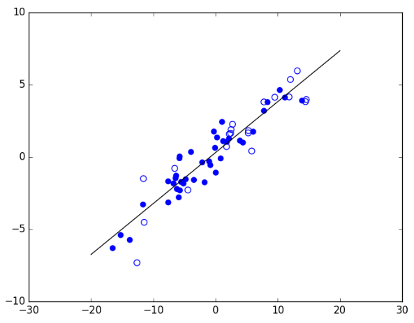
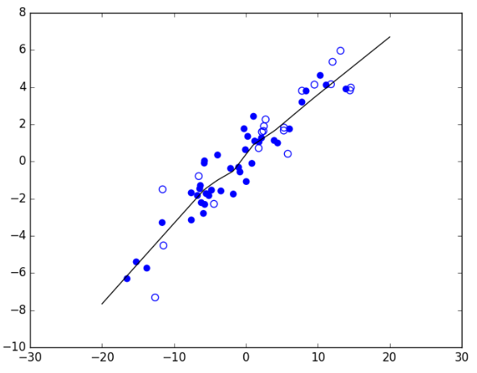
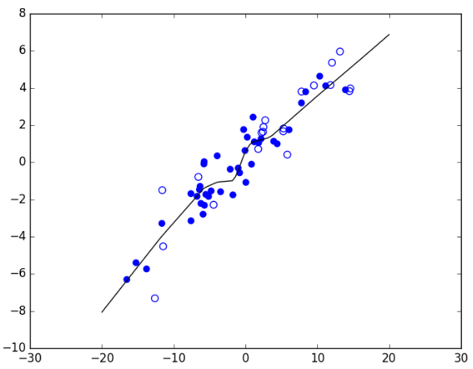
Classification logistique — Étapes
Pour un problème de classification binaire (ex. : accorder ou refuser un prêt), la régression logistique adapte le modèle linéaire en trois étapes : calcul d'un score, transformation en probabilité via la fonction sigmoïde, puis règle de décision par seuil.
Déplacez le curseur pour voir comment la fonction sigmoïde transforme le score z en probabilité, et comment le seuil 0.5 détermine la décision.
Frontières simples
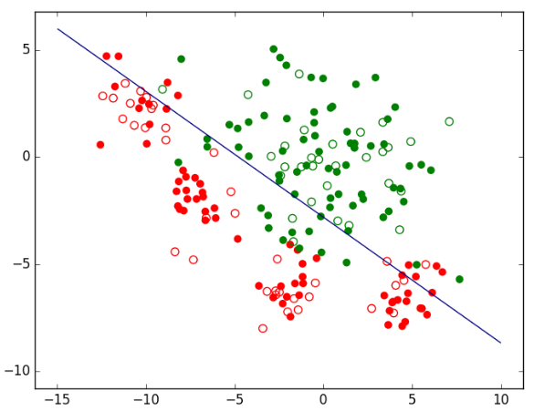
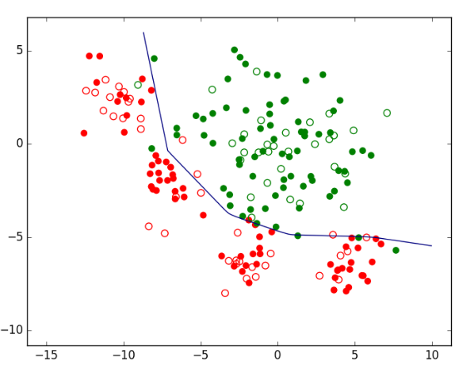
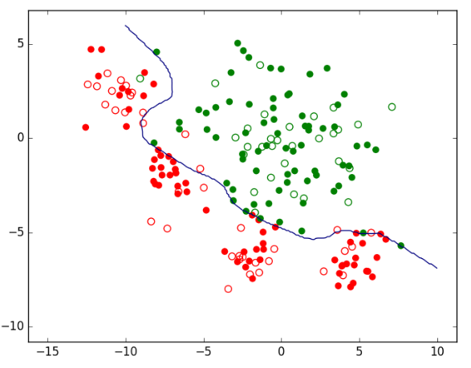
Frontières plus complexes
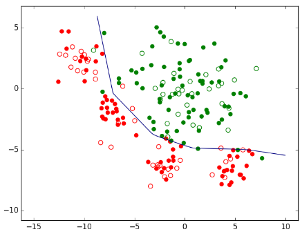
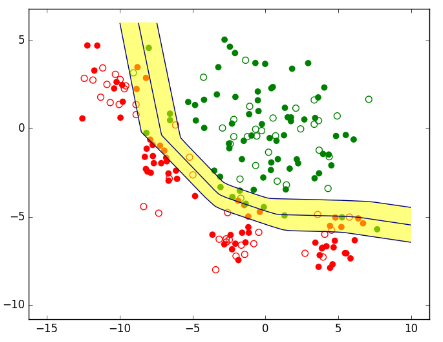
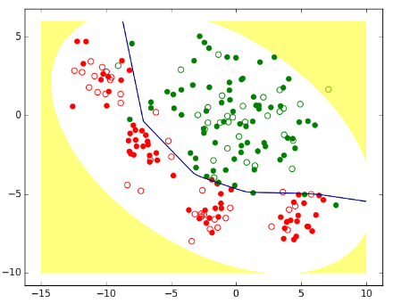
Faites glisser le curseur et observez comment la frontière évolue, et l'effet sur les erreurs d'entraînement et de test (barres en bas à droite).
Problèmes liés aux données
Un modèle n'est jamais meilleur que les données qui l'alimentent — garbage in, garbage out. Plusieurs pathologies courantes dégradent les performances ou biaisent les résultats. Les identifier et les traiter est une étape incontournable avant tout apprentissage.
Données éloignées des autres ou de leur classe. Peuvent être des erreurs de mesure ou un phénomène significatif.
→ Détecter et corriger s'il s'agit d'erreurs ; modéliser si c'est un phénomène réel.
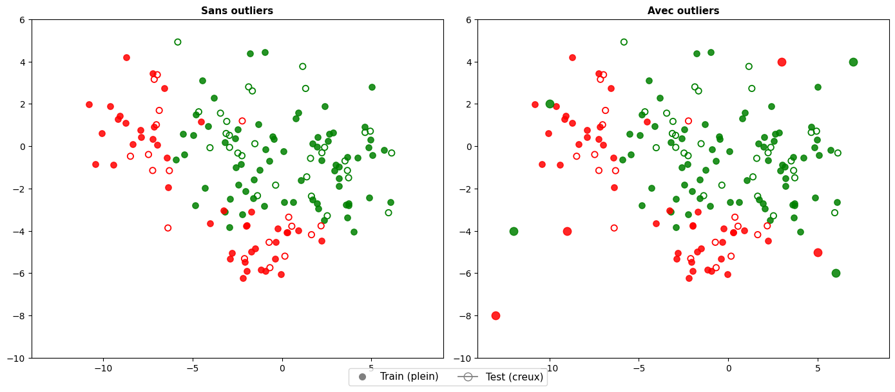
Valeurs absentes pour certaines variables.
→ Ignorer les observations incomplètes ou imputer les valeurs manquantes.
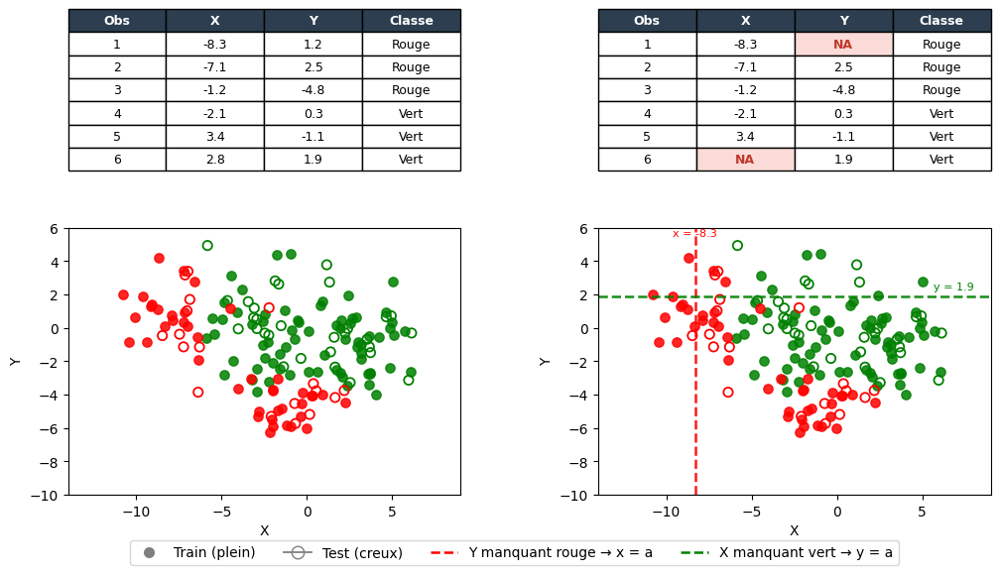
Certains domaines très peu couverts par les observations étiquetées.
→ Compléter la collecte ; en attendant, limiter l'usage au domaine couvert.
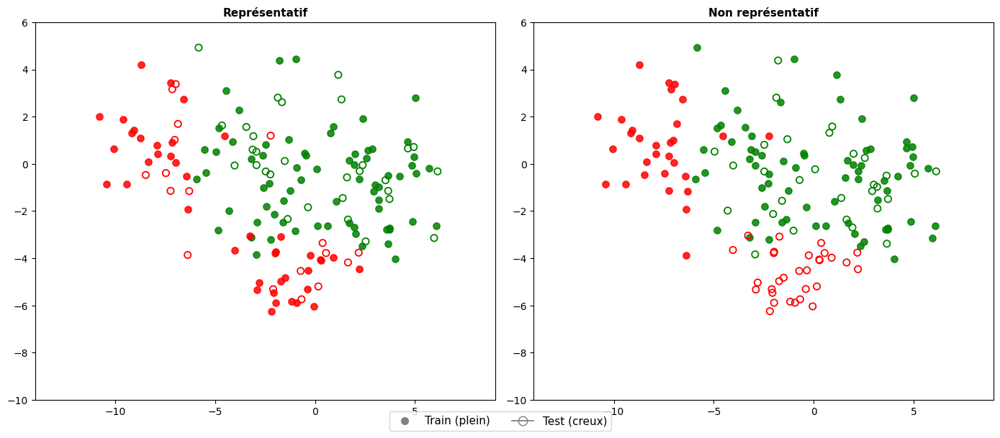
Une classe contient nettement moins d'observations que l'autre.
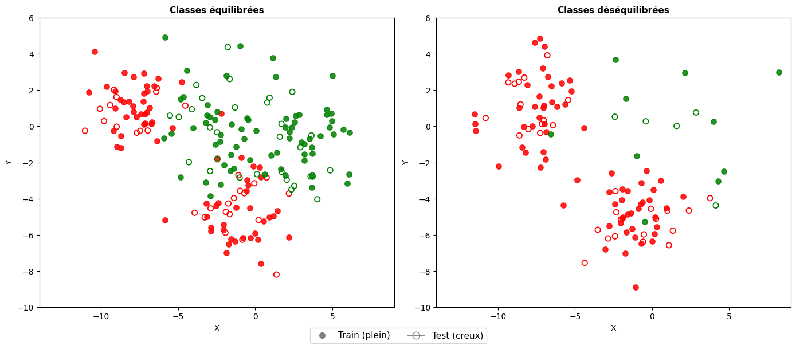
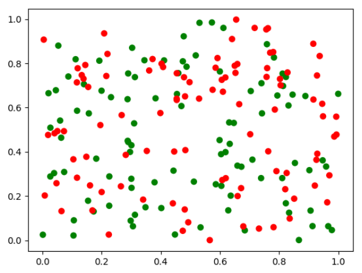
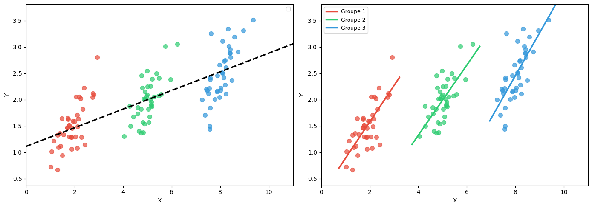
Construction d'un modèle
Un modèle prédictif est une règle (ou un algorithme) qui, étant donné les valeurs des variables explicatives d'une nouvelle observation, produit une prédiction. Sa complexité détermine la forme des frontières qu'il peut tracer — une droite, une courbe, ou une surface très accidentée.
Le choix entre approche paramétrique et non paramétrique dépend de ce qu'on sait (ou suppose) du problème, et des données disponibles.
Forme fonctionnelle fixée a priori → ex. f(x) = θ₀ + θ₁x₁ + θ₂x₂
- Interprétable ; efficace si bien spécifié
- Ex. : régression logistique, LDA, Naive Bayes
Quand ? Besoin d'interprétabilité, relation supposée connue.
Aucune hypothèse sur la forme de f → structure apprise depuis les données.
- Flexible : capture des relations complexes
- Ex. : k-NN, arbres de décision, forêts aléatoires
Quand ? Relations complexes, pas d'hypothèse a priori.
Cas de la régression
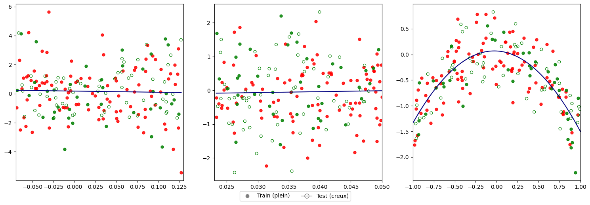
Cas de la classification
Critères de choix d'un modèle
- Adéquation à la complexité du problème
- Volume de données disponibles
- Budget et coût de calcul
- Disponibilité sur la plateforme de développement
- Possibilité de transfert (modèle pré-entraîné)
- Exigences d'explicabilité et d'interprétabilité
- Contraintes éthiques et réglementaires
- Tolérance aux erreurs (faux positifs vs faux négatifs)
Les techniques les plus performantes (deep learning) nécessitent un très grand nombre d'observations étiquetées et sont moins interprétables.
Étapes générales de construction
Métriques d'évaluation — Classification
La matrice de confusion confronte, pour chaque observation, la valeur observée à la valeur prédite. Elle révèle les quatre situations possibles : vrai positif (VP), vrai négatif (VN), faux positif (FP) et faux négatif (FN).
| Prédite | |||
|---|---|---|---|
| + | − | ||
| Observée | + | VP (a) | FN (b) |
| − | FP (c) | VN (d) | |
| Métrique | Formule |
|---|---|
| Accuracy | (a+d)/n |
| Taux d'erreur | (b+c)/n |
| Rappel | a/(a+b) |
| Précision | a/(a+c) |
| Spécificité | d/(c+d) |
| F1-score | 2·(P×R)/(P+R) |
Faux négatifs coûteux → maximiser le Rappel
Courbe ROC & AUC
La courbe ROC (Receiver Operating Characteristic) trace le Rappel (sensibilité, axe Y) en fonction du Taux de Faux Positifs (1 − spécificité, axe X) pour tous les seuils de décision possibles. Elle synthétise la capacité discriminante d'un modèle en un seul graphe, indépendamment du seuil choisi et robuste aux classes déséquilibrées.
| Axe ROC | Formule | Alias |
|---|---|---|
| X — TFP | FP / (FP+VN) | 1 − Spécificité |
| Y — Rappel | VP / (VP+FN) | Sensibilité, TPR |
| AUC | Interprétation |
|---|---|
| = 0.5 | Classifieur aléatoire (diagonale) |
| ∈ [0.7, 0.9] | Bon discriminant |
| > 0.9 | Excellent discriminant |
| = 1.0 | Classifieur parfait (coin supérieur gauche) |
- Indépendant du seuil de décision — synthèse globale
- Robuste aux classes déséquilibrées (contrairement à l'accuracy qui peut être trompeuse)
- Interprétation probabiliste : P(score(positif) > score(négatif))
- Permet de comparer plusieurs modèles sur un seul scalaire
Pour des données très déséquilibrées, la courbe Précision–Rappel (PR curve) est plus informative que la ROC car elle se focalise sur la classe positive rare.
Métriques d'évaluation — Régression
En régression, on mesure l'écart entre les valeurs prédites et les valeurs réelles. Le choix de la métrique doit refléter le coût réel des erreurs dans le contexte applicatif.
| Métrique | Formule | Unité |
|---|---|---|
| MAE | (1/m)·Σ|y⁽ⁱ⁾ − ŷ⁽ⁱ⁾| | même que y |
| MSE | (1/m)·Σ(y⁽ⁱ⁾ − ŷ⁽ⁱ⁾)² | [y]² |
| RMSE | √MSE | même que y |
| R² | 1 − Σ(y⁽ⁱ⁾−ŷ⁽ⁱ⁾)² / Σ(y⁽ⁱ⁾−ȳ)² | sans unité [0,1] |
Apprentissage & Validation
Ajuster itérativement les paramètres θ dans la direction qui réduit le plus la fonction de coût.
| Variante | Gradient calculé sur… |
|---|---|
| Batch GD | Tous les exemples (lent, stable) |
| Stochastique | 1 exemple aléatoire (rapide, bruité) |
| Mini-batch | Un sous-ensemble b d'exemples |
Gauche : carte de chaleur de J(θ₀, θ₁) — la trajectoire part d'un point éloigné et converge vers l'optimum ★.
Droite : la droite de régression s'ajuste à chaque itération ; les segments orange sont les résidus.
Essayez différents taux d'apprentissage η.
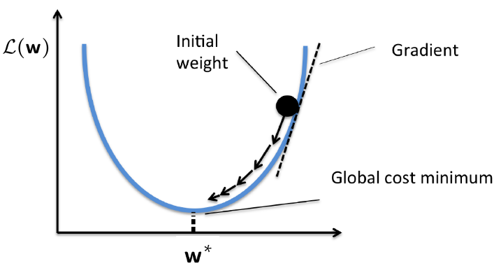
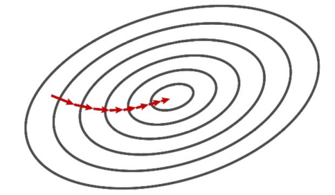
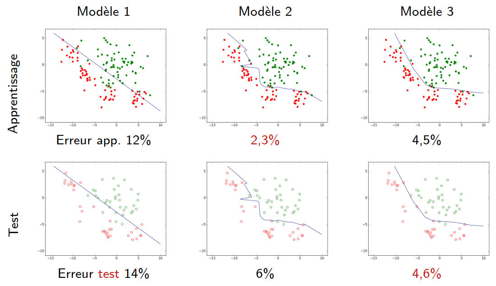
Partitionnement des données
Pour évaluer honnêtement un modèle, les données sont divisées en partitions aux rôles distincts. Il est crucial de ne jamais utiliser le jeu de test pour prendre des décisions de modélisation.
| Partition | Rôle |
|---|---|
| Train | Optimiser les paramètres du modèle |
| Validation | Choisir entre plusieurs modèles (hyperparamètres) |
| Test | Estimer la performance de généralisation |
Validation croisée (k-fold, k=5)
Un seul découpage train/test peut être instable selon le tirage aléatoire. La validation croisée répète l'évaluation sur k partitions différentes pour obtenir une estimation plus robuste et utiliser au maximum les données disponibles.
Score final = moyenne des k scores. Avantage : utilise mieux les données disponibles. Typiquement k=5 ou k=10.
LOOCV & Bootstrap
Deux variantes permettent d'aller plus loin que la simple k-fold, selon les contraintes de taille des données et l'objectif de l'évaluation.
Cas extrême de la k-fold où k = n (nombre d'observations). À chaque itération, un seul point est mis de côté comme test ; le modèle est entraîné sur les n−1 restants.
| Propriété | |
|---|---|
| Biais | Très faible — entraîné sur presque toutes les données |
| Variance | Élevée — n modèles très corrélés entre eux |
| Coût | n entraînements → coûteux pour n grand |
| Usage | Recommandé quand n est petit (< 50–100) |
Technique de rééchantillonnage avec remise. On tire B échantillons bootstrap de taille n parmi les données d'origine, puis on évalue le modèle sur les observations non tirées (environ 36.8% du jeu orignal — échantillon out-of-bag).
- Estimer la variance et les intervalles de confiance d'un estimateur
- Moins biaisé que la k-fold pour l'estimation de l'erreur de généralisation
- Base des forêts aléatoires (bagging)
Biais, Variance & Régularisation
Après l'apprentissage, il faut diagnostiquer le comportement du modèle. L'erreur de généralisation se décompose en trois termes : le biais (erreur systématique due à un modèle trop simple), la variance (sensibilité aux fluctuations des données d'entraînement) et un bruit irréductible propre aux données.
Sous-apprentissage
- Modèle trop simple
- Erreur élevée en train et en test
- → Augmenter la complexité
- → Réduire la régularisation
Bon compromis
- Modèle optimal
- Bonne erreur en train et en test
- → Objectif à atteindre
Sur-apprentissage
- Modèle trop complexe
- Bonne erreur en train, mauvaise en test
- → Plus de données
- → Régularisation
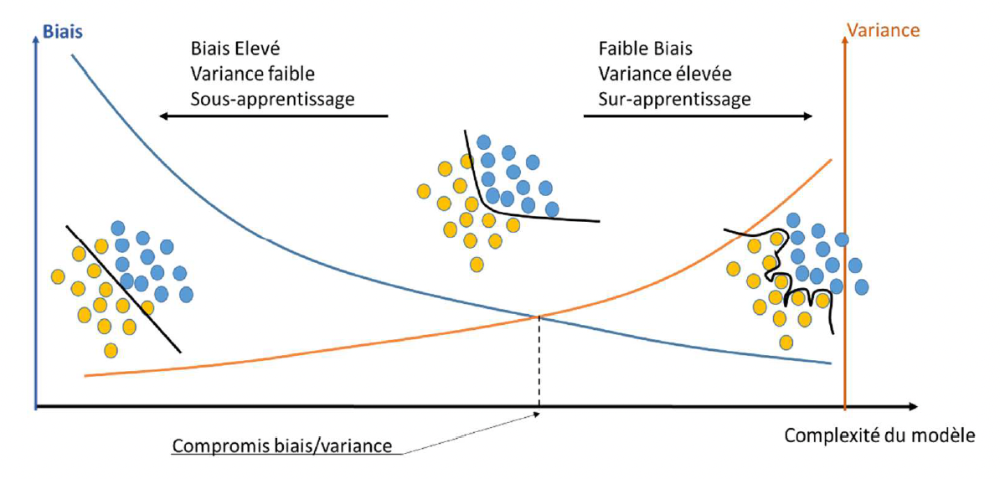
Régularisation
Face au sur-apprentissage, la régularisation consiste à ajouter à la fonction de coût une pénalité qui décourage les coefficients trop grands. On obtient ainsi un modèle plus simple qui généralise mieux, au prix d'un léger biais accepté.
Pénalise les grands coefficients ; réduit la variance sans les annuler.
Pénalise les coefficients ; peut les mettre exactement à zéro (sélection de variables).
Proposé par Zou & Hastie (2005), Elastic Net combine les deux pénalités. Le paramètre ρ ∈ [0,1] règle le mélange : ρ=1 → Lasso pur ; ρ=0 → Ridge pur.
ElasticNet).Courbes d'apprentissage
Une courbe d'apprentissage trace l'erreur d'entraînement et de validation en fonction de la taille m du jeu d'entraînement. C'est l'outil de diagnostic standard (popularisé par Andrew Ng) pour distinguer un problème de biais d'un problème de variance avant de décider quelle action corrective prendre.
- L'erreur d'entraînement monte avec m puis se stabilise à un niveau élevé
- L'erreur de validation descend mais converge vers le même plateau élevé
- Les deux courbes se rejoignent — petit écart entre elles
Remèdes : modèle plus complexe, nouvelles features, moins de régularisation.
- L'erreur d'entraînement reste faible
- L'erreur de validation reste élevée
- Grand écart persistant entre les deux courbes
Remèdes : régularisation (Ridge/Lasso), modèle moins complexe, dropout, plus de données.
| Symptôme observé | Diagnostic | Action prioritaire |
|---|---|---|
| Erreur train élevée | Fort biais | Augmenter complexité, ajouter features |
| Erreur train faible, test élevée | Forte variance | Régularisation, plus de données |
| Erreur train & test faibles | Bon compromis | Déploiement ✓ |
| Erreur train & test qui divergent | η trop grand (GD) | Réduire le taux d'apprentissage |
Références & Ressources
Une sélection de ressources complémentaires pour approfondir les notions abordées dans ce cours — tutoriels francophones, ouvrages de référence internationaux et outils pratiques.
Cours & tutoriels
Cours complets et gratuits en français sur la modélisation prédictive, les algorithmes de classification et de régression, l'évaluation des modèles et la sélection de variables. Référence incontournable pour les praticiens francophones.
Spécialisation en 3 cours couvrant la régression, la classification, les réseaux de neurones et l'apprentissage non supervisé. Accessible aux débutants, exercices pratiques en Python/NumPy.
Approche pratique du deep learning et du machine learning : apprentissage par la pratique avec des projets réels. Couvre tabular data, vision et NLP, en PyTorch.
Introduction rapide aux concepts fondamentaux du ML — descente de gradient, régularisation, évaluation. Inclus des exercices interactifs en TensorFlow Playground.
Ouvrages de référence
L'ouvrage de référence pour une introduction rigoureuse et accessible au machine learning statistique. PDF librement téléchargeable. Couvre régression, classification, resampling, sélection de modèles, SVM, arbres et méthodes ensemblistes.
Version avancée d'ISL, couvrant en profondeur les méthodes d'ensemble (bagging, boosting, random forests), les réseaux de neurones, le SVM, les graphical models. PDF librement téléchargeable.
Traitement probabiliste et bayésien du ML : modèles graphiques, EM, modèles de mélanges, réseaux de neurones, SVM, méthodes à noyaux. Ouvrage de référence pour les fondements mathématiques.
Deux volumes couvrant l'ensemble des méthodes probabilistes modernes — apprentissage profond inclus. Chapitres disponibles gratuitement en ligne, avec code Python/JAX.
Outils & librairies Python
La librairie de référence pour le ML classique : classification, régression, clustering, réduction de dimension, pipelines et validation. Documentation et exemples exhaustifs.
Chargement, nettoyage, transformation et exploration des données structurées. Indispensable pour toute la phase de préparation des données.
Matplotlib pour le contrôle bas niveau des graphiques, seaborn pour des visualisations statistiques élégantes en quelques lignes. Essentiels pour l'analyse exploratoire.